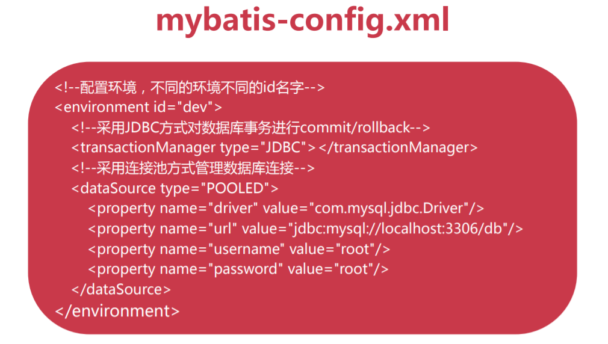
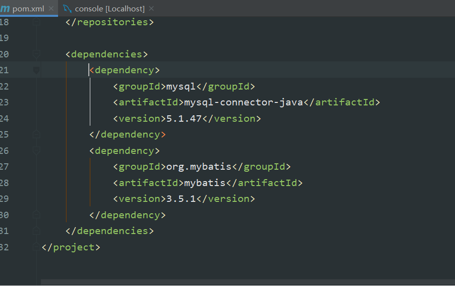
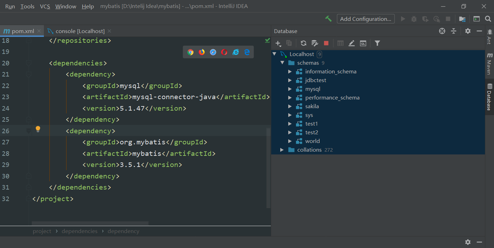

MyBatis小记
1.MyBatis初见
MyBatis是持久层框架，使用XML将SQL与程序解耦，便于维护。
MyBatis执行高效，是JDBC的延伸。官方文档
MyBatis开发流程：
- 引入MyBatis依赖
- 创建核心配置文件
- 创建实体（Entity）类
- 创建Mapper映射文件
- 初始化SessionFactory
- 利用SqlSession对象操作数据
2.MyBatis环境配置
- MyBatis采用XML格式配置数据库环境信息
- MyBatis环境配置标签
- environment包换数据库驱动，url，用户名，密码

首先创建Maven项目，配置pom.xml里面相关的依赖，链接MySQL


在resources目录下建立mybatis-config.xml文件
<?xml version="1.0" encoding="UTF-8"?>
<!DOCTYPE configuration
PUBLIC "-//mybatis.org//DTD Config 3.0//EN"
"http://mybatis.org/dtd/mybatis-3-config.dtd">
<configuration>
<!--设置默认指向的数据库-->
<environments default="dev">
<!--配置环境，不同的环境不同的id名字-->
<environment id="dev">
<!-- 采用JDBC方式对数据库事务进行commit/rollback -->
<transactionManager type="JDBC"></transactionManager>
<!--采用连接池方式管理数据库连接-->
<!--<dataSource type="POOLED">-->
<dataSource type="com.imooc.mybatis.datasource.C3P0DataSourceFactory">
<property name="driverClass" value="com.mysql.jdbc.Driver"/>
<property name="jdbcUrl" value="jdbc:mysql://localhost:3306/babytun?useUnicode=true&characterEncoding=UTF-8"/>
<property name="user" value="root"/>
<property name="password" value="root"/>
<property name="initialPoolSize" value="5"/>
<property name="maxPoolSize" value="20"/>
<property name="minPoolSize" value="5"/>
<!--...-->
</dataSource>
</environment>
<environment id="prd">
<!-- 采用JDBC方式对数据库事务进行commit/rollback -->
<transactionManager type="JDBC"></transactionManager>
<!--采用连接池方式管理数据库连接-->
<dataSource type="POOLED">
<property name="driver" value="com.mysql.jdbc.Driver"/>
<property name="url" value="jdbc:mysql://192.168.1.155:3306/babytun?useUnicode=true&characterEncoding=UTF-8"/>
<property name="username" value="root"/>
<property name="password" value="root"/>
</dataSource>
</environment>
</environments>
<mappers>
<mapper resource="mappers/goods.xml"/>
<mapper resource="mappers/goods_detail.xml"/>
</mappers>
</configuration>3.SqlSessionFactory
SqlSessionFactory是MyBatis的核心对象，用于初始化MyBatis，创建SqlSession对象，全局唯一
SqlSession是MyBatis操作数据库的核心对象，使用JDBC方式与数据库交互。SqlSession对象提供了数据表CRUD对应方法
/**
* 初始化SqlSessionFactory
* @throws IOException
*/
@Test
public void testSqlSessionFactory() throws IOException {
//利用Reader加载classpath下的mybatis-config.xml核心配置文件
Reader reader = Resources.getResourceAsReader("mybatis-config.xml");
//初始化SqlSessionFactory对象,同时解析mybatis-config.xml文件
SqlSessionFactory sqlSessionFactory = new SqlSessionFactoryBuilder().build(reader);
System.out.println("SessionFactory加载成功");
SqlSession sqlSession = null;
try {
//创建SqlSession对象,SqlSession是JDBC的扩展类,用于与数据库交互
sqlSession = sqlSessionFactory.openSession();
//创建数据库连接(测试用)
Connection connection = sqlSession.getConnection();
System.out.println(connection);
}catch (Exception e){
e.printStackTrace();
}finally {
if(sqlSession != null){
//如果type="POOLED",代表使用连接池,close则是将连接回收到连接池中
//如果type="UNPOOLED",代表直连,close则会调用Connection.close()方法关闭连接
sqlSession.close();
}
}
}4.初始化工具类MyBatisUtils
import org.apache.ibatis.io.Resources;
import org.apache.ibatis.session.SqlSession;
import org.apache.ibatis.session.SqlSessionFactory;
import org.apache.ibatis.session.SqlSessionFactoryBuilder;
import java.io.IOException;
import java.io.Reader;
/**
* MyBatisUtils工具类,创建全局唯一的SqlSessionFactory对象
*/
public class MyBatisUtils {
//利用static(静态)属于类不属于对象,且全局唯一
private static SqlSessionFactory sqlSessionFactory = null;
//利用静态块在初始化类时实例化sqlSessionFactory
static {
Reader reader = null;
try {
reader = Resources.getResourceAsReader("mybatis-config.xml");
sqlSessionFactory = new SqlSessionFactoryBuilder().build(reader);
} catch (IOException e) {
e.printStackTrace();
//初始化错误时,通过抛出异常ExceptionInInitializerError通知调用者
throw new ExceptionInInitializerError(e);
}
}
/**
* openSession 创建一个新的SqlSession对象
* @return SqlSession对象
*/
public static SqlSession openSession(){
//默认SqlSession对自动提交事务数据(commit)
//设置false代表关闭自动提交,改为手动提交事务数据
return sqlSessionFactory.openSession(false);
}
/**
* 释放一个有效的SqlSession对象
* @param session 准备释放SqlSession对象
*/
public static void closeSession(SqlSession session){
if(session != null){
session.close();
}
}
}
5.MyBatis数据查询
MyBatis数据查询步骤:
- 创建实体类（Entity）
- 创建Mapper XML
- 编写
- 开启驼峰命名映射
- 新增
- SqlSession执行select语句